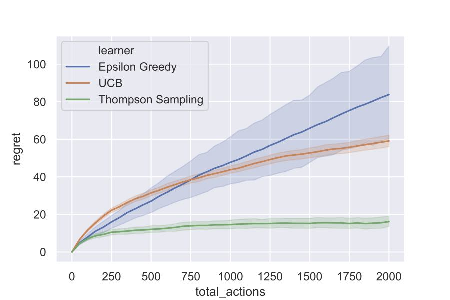

Readme¶
_ _ _ _ _ _ _
| | | (_) | | (_) |
| |__ __ _ _ __ __| |_| |_ _ __ _ _| |_| |__
| '_ / _` | '_ / _` | | __| '_ \| | | | | | '_
| |_) | (_| | | | | (_| | | |_| |_) | |_| | | | |_) |
|_.__/ \__,_|_| |_|\__,_|_|\__| .__/ \__, |_|_|_.__/
| | __/ |
|_| |___/
A lightweight python library for bandit algorithms
Introduction¶
This library is intended for fast and robust build of bandit algorithms. Hence it has the following features:
object-oriented design
multiprocesses support
friendly runtime info
The library consists of four components i.e., arms, bandits, learners and protocols, which are explained in the following:
arms: a set of arms used to build bandit environmentsbandits: bandit environmentslearners: bandit algorithmsprotocols: protocols which are used to coordinate the interactions between the learner and the bandit environment
Implemented Policies¶
Single player protocol¶
Multi-armed bandit¶
Goal |
Policies |
|---|---|
Maximize rewards |
|
Best arm identification with fixed budget |
|
Best arm identification with fixed confidence |
|
MNL bandit¶
Goal |
Policies |
|---|---|
Maximize rewards |
|
Thresholding bandit¶
Goal |
Policies |
|---|---|
Make all answers correct |
|
Linear bandit¶
Goal |
Policies |
|---|---|
Maximize rewards |
|
For a detailed description, please check the documentation.
Getting Started¶
Installing¶
Python version requirement: 3.7 or above.
Virtual environment: in order not to pollute your own environment, it is suggested to use python virtual environment. The following commands show the details to create and activate a virtual environment.
# Create a virtual environment `.env`
python3 -m venv .env
# Activate the environment
source .env/bin/activate
Then you can run the following command to install the banditpylib library.
make install
After finishing the usage of the library, you can use deactivate to deactive the virtual environment and what’s more, you can safely delete the whole .env directory for cleanup.
The following shows other useful make commands.
make test
run tests
make lint
run pylint and mypy
make clean
clean cache files
make fix
run yapf to format all .py files
We use pylint and mypy to check the code style. Please make sure no errors occur with make lint when submitting a PR.
Example¶
Suppose we want to run algorithms Epsilon Greedy, UCB and Thompson Sampling, which aim to maximize the total rewards, against the ordinary multi-armed bandit environment with 3 Bernoulli arms. The following code blocks show the main logic.
Set up bandit environment¶
# Real means of Bernoulli arms
means = [0.3, 0.5, 0.7]
# Create Bernoulli arms
arms = [BernoulliArm(mean) for mean in means]
# Create an ordinary multi-armed bandit environment
bandit = MultiArmedBandit(arms=arms)
Set up learners¶
# Create learners aiming to maximize the total rewards
learners = [EpsGreedy(arm_num=len(arms)),
UCB(arm_num=len(arms)),
ThompsonSampling(arm_num=len(arms))]
Set up simulator and play the game¶
# Horizon of the game
horizon = 2000
# Record intermediate regrets for each trial
intermediate_regrets = list(range(0, horizon+1, 50))
# Set up simulator using single-player protocol
game = SinglePlayerProtocol(bandit=bandit,
learners=learners,
intermediate_regrets=intermediate_regrets,
horizon=horizon)
# Start playing the game and for each setup we run 200 trials
game.play(trials=200)
The following figure shows the simulation results.
{kind=link}
Please check this notebook to figure out more details.
Bibtex Citation¶
@misc{BanditPyLib,
title = {{BanditPyLib: a lightweight python library for bandit algorithms}},
author = {Chester Holtz and Chao Tao and Guangyu Xi},
year = {2020},
url = {https://github.com/Alanthink/banditpylib},
howpublished = {Online at: \url{https://github.com/Alanthink/banditpylib}},
note = {Documentation at \url{https://alanthink.github.io/banditpylib-doc}}
}
License¶
This project is licensed under the MIT License - see the LICENSE.txt file for details.
Acknowledgments¶
This project is inspired by libbandit and banditlib which are both c++ libraries for bandit algorithms.
This readme file is following the style of README-Template.md.
The title is generated by TAAG.